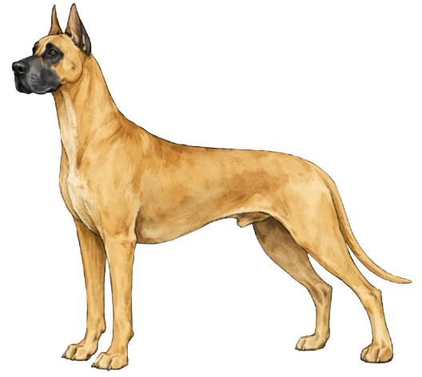
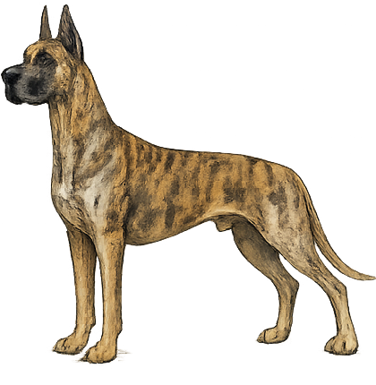
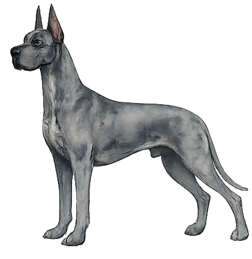
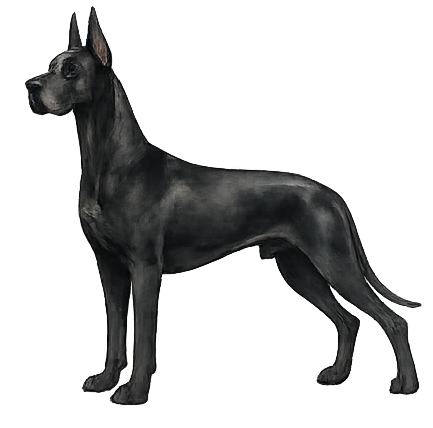
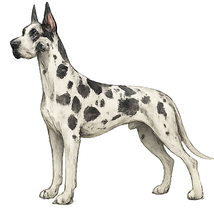
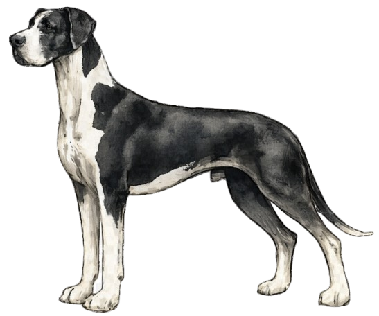
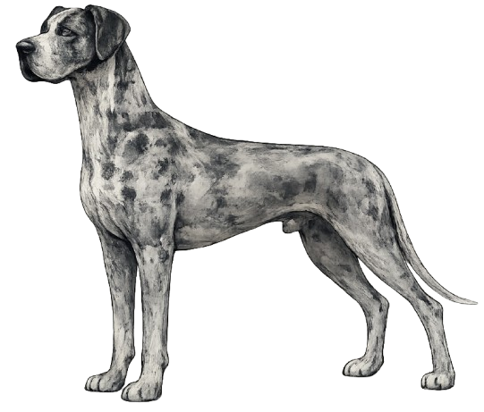

Understanding the Great Dane
The Great Dane stands as one of the world's tallest dog breeds, embodying a remarkable combination of elegance and substance that has captivated enthusiasts for centuries. Originally bred as boarhounds in medieval Germany, where they were known as the Deutsche Dogge, these magnificent dogs were developed to hunt wild boar alongside nobility. Today, they retain the regal bearing and dignified composure that once made them prized hunting companions, while embodying a temperament that is surprisingly gentle and affectionate.
Recognized by the American Kennel Club as members of the Working Group, Great Danes are celebrated for their spirited yet gentle nature. Males typically stand 30 to 32 inches at the shoulder and weigh between 140 to 175 pounds, while females measure 28 to 30 inches with weights of 110 to 140 pounds. Despite their imposing stature, these noble dogs are known for their calm demeanor, loyalty to their families, and unexpected grace. The breed's combination of strength, intelligence, and affectionate nature makes them exceptional companions for those prepared to meet their considerable space and care requirements.

Temperament & Characteristics
Recognized Colors
The Great Dane breed standard recognizes seven distinct color patterns, each with its own beauty and heritage within the breed.

Fawn
Light golden to deep gold with black mask

Brindle
Fawn base with black chevron stripes

Blue
Pure steel blue

Black
Glossy black

Harlequin
White base with black torn patches

Mantle
Black and white with specific markings

Merle
Gray base with dark patches
Breed History
The Great Dane's ancestry traces back to 16th-century Germany, where these magnificent dogs were selectively bred from Mastiff-type hunting dogs to create the ultimate boarhound. Named the Deutsche Dogge by German breeders who refined the breed, Great Danes were prized possessions of German nobility and were extensively used in boar hunting, a pursuit that demanded both courage and athleticism.
The breed achieved official recognition when it was declared Germany's national breed in 1876, a testament to its cultural significance and the pride Germans took in their "Apollo of Dogs." The first Great Dane breed standard was established in 1881, establishing the guidelines that would shape the breed's development for generations. In 1889, the Great Dane Club of America was founded, making it one of the oldest parent clubs in the United States and demonstrating the breed's rapid rise in popularity beyond its Germanic homeland.
Over the past two centuries, the Great Dane has undergone a remarkable transformation—from fierce hunter to beloved family companion. While retaining the strength, dignity, and courageous spirit of their ancestors, modern Great Danes are cherished as gentle giants known for their loyalty, affection, and surprising sensitivity. This evolution reflects not a weakening of the breed, but rather a celebration of their true nature: dogs of considerable substance and spirit, yet possessed of remarkable gentleness and an unwavering devotion to their families.
Health & Care
Great Danes are generally healthy dogs, but like all breeds, they are predisposed to certain conditions:
- Bloat/GDV (Gastric Dilatation-Volvulus): A serious and potentially life-threatening condition that requires immediate veterinary care.
- Dilated Cardiomyopathy: A heart condition affecting the breed; responsible breeders conduct cardiac screening.
- Hip Dysplasia: A joint disorder that can affect mobility in older dogs.
- Wobbler Syndrome: A neurological condition affecting the cervical spine.
Working with reputable breeders who conduct health testing is essential for prospective Great Dane owners.
Average Lifespan: 7-10 years
Great Danes require:
- Nutrition: High-quality diet formulated for large breeds; avoid overfeeding to prevent joint stress.
- Exercise: Moderate, consistent exercise; they are surprisingly sedentary for their size and do not require excessive activity.
- Space: Significant indoor and outdoor space to accommodate their large frame comfortably.
- Veterinary Care: Regular check-ups, cardiac screening, and preventive care are essential.
AKC Breed Standard Summary
The American Kennel Club breed standard describes the Great Dane as a dog of regal dignity, strength, and elegance. The ideal Great Dane is characterized by:
- General Appearance: Regal, dignified, strong, and elegantly formed
- Size: One of the tallest dog breeds, impressive in stature yet balanced in proportion
- Temperament: A combination of spirit, courage, friendliness, and dependability
- Movement: Smooth, powerful, and graceful despite their considerable size
- Expression: Alert, intelligent, and noble
The standard emphasizes that Great Danes should convey the impression of great power and strength, yet possess a gentleness and nobility of bearing that sets them apart. This remarkable combination of qualities—power married with gentleness, strength with grace—defines what makes the breed truly exceptional.
Find a Breeder
Looking for a responsibly bred Great Dane? The Great Dane Club of America maintains a directory of breeders who are committed to the health, temperament, and betterment of the breed.
GDCA Breeder Directory